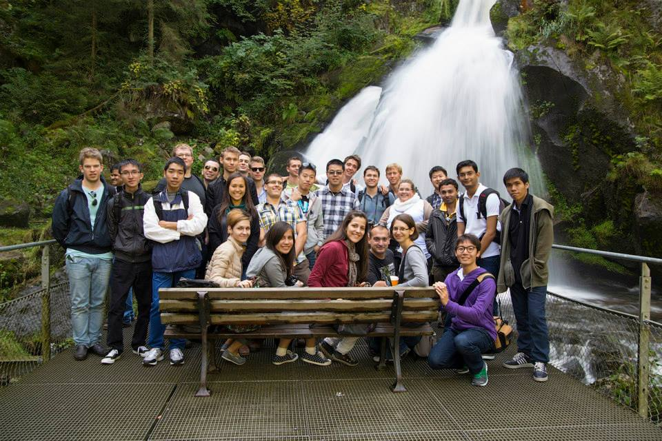
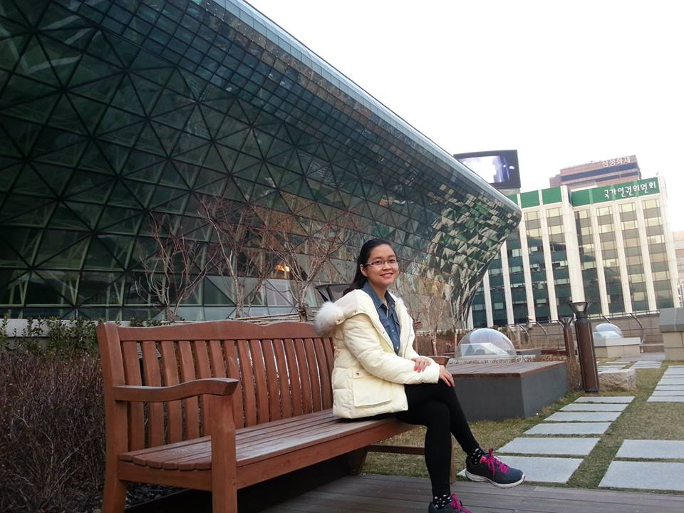

HỌC KÌ NƯỚC NGOÀI TẠI ĐẠI HỌC FPT:
1. Chương trình Trao đổi sinh viênChương trình hướng tới mục tiêu, mỗi sinh viên FPT khi tốt nghiệp đều có cơ hội đặt chân đến ít nhất một trường đại học thuộc một quốc gia khác trong mạng lưới đối tác của trường Đại học FPT. Thời gian trao đổi kéo dài từ 1-2 học kỳ.
 Trần Nguyễn Đăng Khoa (ngoài cùng bên phải) sinh viên ngành CNTT – Đại học FPT chụp cùng bạn bè quốc tế trong chuyến trao đổi tại Đại học Furtwangen (Đức ) năm 2014 2. Chương trình Học kỳ học tiếng Nhật tại Nhật Bản (JIJ – Japanese in Japan)JIJ diễn ra trong thời gian từ 1 học kỳ tới 1 năm học tại một trường đối tác được Đại học FPT lựa chọn tại Nhật. Chương trình được xây dựng dựa trên năng lực đầu vào và chuẩn tiếng Nhật đầu ra của Trường Đại học FPT với mỗi chuyên ngành.
 Tô Ngọc Quỳnh Thi, sinh viên ngành Kinh tế – Đại học FPT tham gia chương trình trao đổi tại Đại học Sungkyunkwan, Seoul, Hàn Quốc 3. Chương trình học tiếng Anh tại Philippines & BruneiChương trình học tiếng Anh tại Philippines diễn ra trong quãng thời gian 6 tuần tại Philippines. Đây được coi là địa điểm du học tiếng Anh hấp dẫn, thu hút rất nhiều sinh viên đến từ các nước châu Á như: Trung Quốc, Hàn Quốc, Nhật Bản, Thái Lan… không chỉ bởi môi trường sinh hoạt mà còn bởi giọng phát âm chuẩn kiểu Bắc Mỹ.
Chương trình là sự kết hợp giữa việc học tiếng Anh (theo chương trình tương đương SUMMIT 2) với các hoạt động tham quan dã ngoại và giao lưu văn hóa tại Philippines.
Tính đến nay, Đại học FPT đã triển khai thành công rất nhiều đợt học tiếng Anh tại Philippines với hơn 200 sinh viên tại cả 3 cơ sở (Hà Nội, Đà Nẵng, TP. HCM).